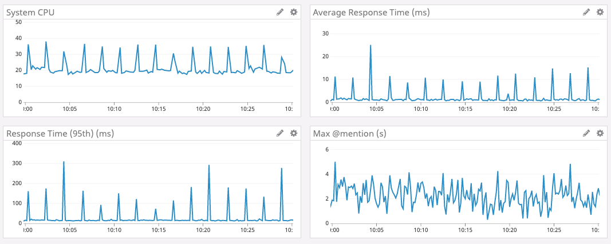
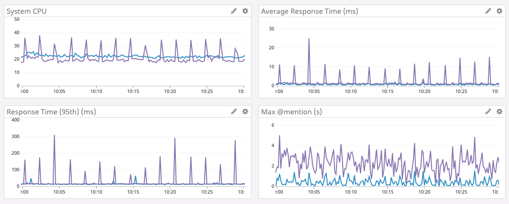
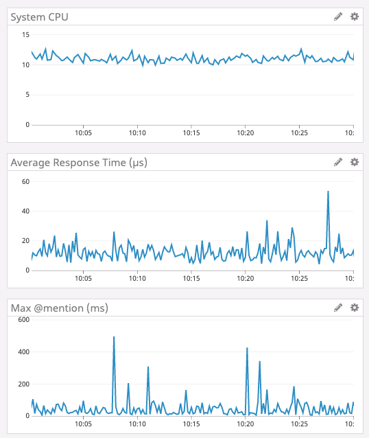
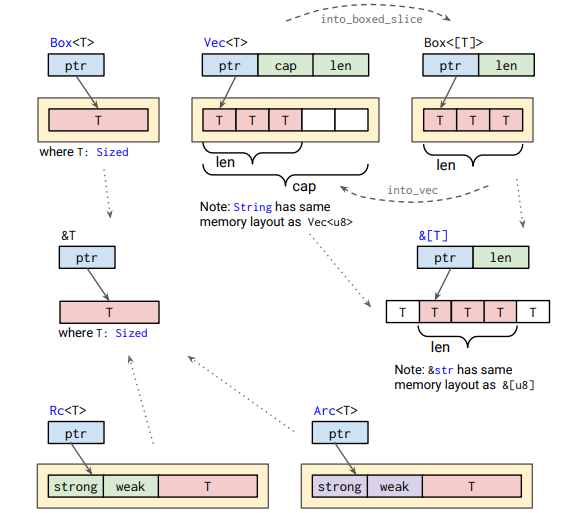

Administrivia
- “Lab 3: FAT32 Filesystem” is out and due in 3 week (DUE: Mar 2)!
- 1.8K lines, 11.1K words, 73.0K characters

Taesoo Kim
Taesoo Kim
Can you please go over the difference between " impl thing for &StackVec " and “impl thing for StackVec”?
What is the most important contribution that rust has given the academic community? What companies hire for rust and for what kind of systems?



Box<T>*ptr (i.e., Deref/DerefMut)ptr goes out of scope (i.e., Drop)
Rc with & (or &mut)?Rc with & (or &mut)?
Arc)Rc?Rc?
T